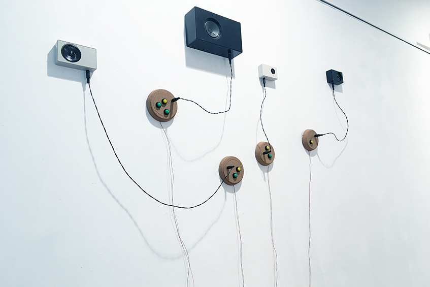
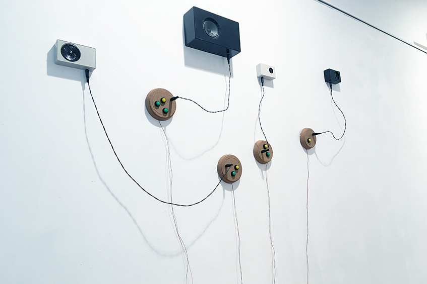
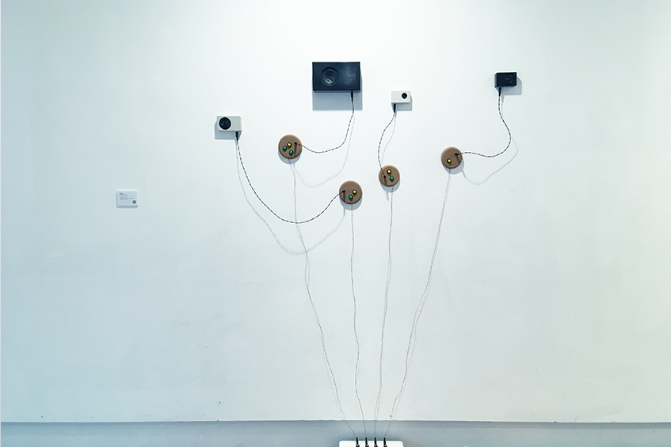

.
.
 

Blah, blah, blah
sound installation / interactive sound device, 2018

blah, blah, blah (阿趦阿趄) is a synthesizer made with a 555 timer that converts electricity into sound.
The installation has two modes, one is the performance mode, the sound can be controlled by buttons and knobs, and it becomes an improvisational instrument; the other is the demonstration mode.
The work is one of the “Daily Practice 555” series.